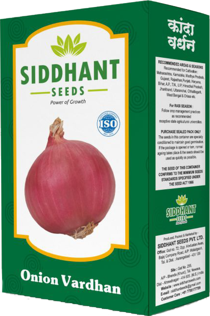
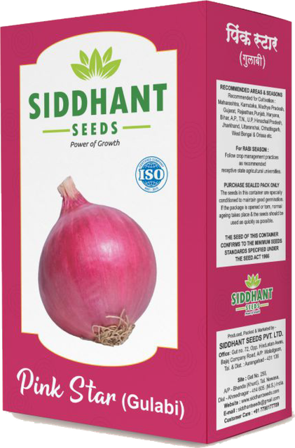

Onion
Superstar
Red onion
Our flagship red onion variety, processed straight after harvest.
- Season
- Red season
Our own onion varieties for the red and Gawran (storage) seasons. Germination is checked at the raw, processed and packed stages.
Our flagship red onion variety, processed straight after harvest.
Red onion variety developed for quality bulbs and strong market demand.
Grown as a red onion in Karnataka and as a Gawran onion in Maharashtra.

Storage-type onion for the rabi season, stored at our plant and packed and sold from mid-August.

Gawran onion with pink bulbs, stored at our plant and processed after red onion.
Season entries marked "confirm" are being verified. Full agronomic sheets are available from your dealer.
Real farmers show their Siddhant crop in their own fields. Tap a video to watch.